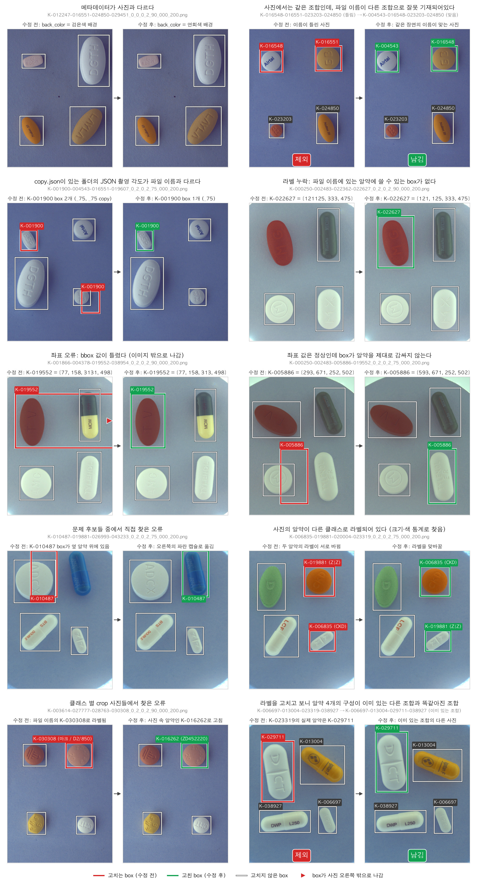

1
/
0
2차 EDA
AI Hub 라벨 오류 후보를 전수 검사해 정제했습니다.
OpenCV로 후보를 찾아 자동으로 고친 뒤
모든 후보를 사람이 검수
했고,
알약 crop 45,910개를 눈으로 확인
했습니다.
1,391개 + 15장
오류 후보
936개
자동 수정
164개
눈으로 확인하고 수정
15장 / 21개
이미지 제외 / 고치지 못함
11,974장 · 45,819개
정제 후 사진 · 객체

▦
← →/Space 이동 · N 노트 · Esc 목차
SPEAKER NOTES